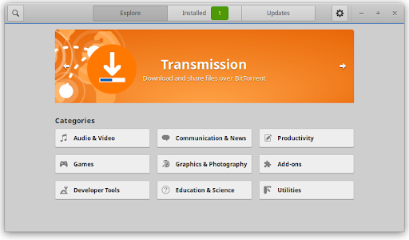
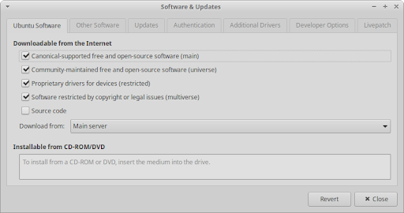
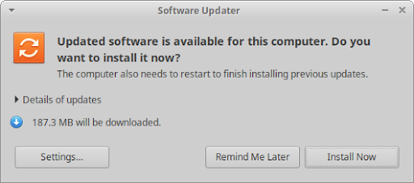
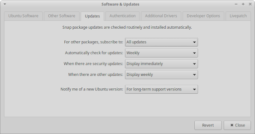

Table des matières
Les logiciels facilement disponibles à installer sur Xubuntu sont stockés dans des référentiels de logiciels en ligne contenant des logiciels fiables. Les référentiels de logiciels sous Linux sont similaires aux catalogues de logiciels utilisés par les magasins d'applications de bureau comme le Microsoft Store et le Mac App Store, ou par les magasins d'applications mobiles comme le Google Play Store et l'App Store d'Apple.
Ces référentiels stockent des progiciels, qui sont les composants individuels qui constituent collectivement les logiciels utilisés par votre ordinateur. Les progiciels sont stockés de cette manière afin de pouvoir être partagés par différents programmes. Les référentiels de logiciels de Xubuntu sont organisés et maintenus par les responsables du système d'exploitation (système d'exploitation) et contiennent une large sélection de logiciels gratuits et open source. Les responsables du système d'exploitation garantissent que le logiciel fonctionne correctement et ne contient pas de logiciels espions ou de virus.
Xubuntu est livré avec des applications qui permettent aux utilisateurs d'installer, de mettre à jour et de désinstaller facilement des logiciels à partir de référentiels.
Logiciel ( gnome-software
gnome-software gnome-software-plugin-snap
gnome-software-plugin-snap gnome-software-plugin-flatpak
gnome-software-plugin-flatpak
Snap Store (installation) est un magasin d'applications permettant la gestion des applications qui utilisent le système de gestion de packages Snap. Les applications Snap sont confinées pour plus de sécurité, se mettent à jour automatiquement et peuvent s'exécuter sur de nombreuses distributions Linux différentes. Le Snap Store est également disponible sous forme d'interface web.
Synaptic ( synaptic
synaptic
apt ou apt-get est un outil en CLI (interface en ligne de commande) pour la gestion des packages qui fournit des fonctionnalités similaires à Synaptic et est bénéfique à ceux qui n'ont pas accès à une interface graphique ou préfèrent utiliser le terminal. Pour obtenir des informations sur les commandes de bases apt, voyez la documentation Apt d'Ubuntu.
snap ( snapd
snapd
![[Note]](../../libs-common/images/note.png)
|
|
|
Vous aurez besoin d'un accès administratif pour ajouter, mettre à jour et supprimer des logiciels et vous ne pourrez utiliser qu'un seul gestionnaire de paquets à la fois pour la gestion des paquets. Il existe des magasins d'applications et des gestionnaires de packages supplémentaires, notamment Flathub, AppImageHub, Ubuntu MATE Software Boutique, AppGrid, Aptitude ( |
Vous pouvez lancer le centre Logiciel GNOME à partir du (
( Ctrl+Échap) ou Liste d'applications (
Ctrl+Échap) ou Liste d'applications ( Alt+F3). Il sera nommé Logiciel et il est trouvable par défaut dans la catégorie Favoris, donc il sera visible une fois que vous ouvrirez le
Alt+F3). Il sera nommé Logiciel et il est trouvable par défaut dans la catégorie Favoris, donc il sera visible une fois que vous ouvrirez le  .
.

Une fois lancé, vous serez sur l'onglet Explorer de GNOME Logiciel, qui vous permet de parcourir les catégories ou de cliquer sur le bouton de dans la barre de titre, pour trouver facilement une application par nom ou par mot-clé. Lorsque vous cliquez sur une application, vous arrivez à sa page d'informations, qui contient sa description, ses images, son lien vers un site Web, ses avis et d'autres détails. Sur cette page, vous avez la possibilité d'installer, de lancer ou de supprimer l'application, ainsi que de rédiger un avis.
Les deux autres onglets de la barre de titre sont Installés et Mises à jour. L'onglet Installé répertorie toutes les applications installées sur le système et offre un accès facile pour les supprimer. L'onglet Mises à jour indique quelles applications sont éligibles à une mise à jour et comporte également un bouton dans la barre de titre pour rechercher de nouvelles mises à jour.
|
Certains programmes ont besoin que d'autres soient installés pour fonctionner correctement. Si vous essayez de supprimer une application nécessaire au fonctionnement d'une autre, les deux seront supprimées. Une confirmation vous sera demandée dans ce cas, avant que les applications ne soient supprimées. |
|
|
|
|
GNOME Logiciel ne supprime pas les dépendances des packages logiciels installés avec une application. Pour supprimer toutes les dépendances qui ne sont plus nécessaires au système, exécutez |
Les référentiels de logiciels Ubuntu contiennent des milliers d'applications sélectionnées à partir des meilleurs FOSS (logiciels libres et open source) concernant le divertissement et la productivité. La gestion de ces référentiels de logiciels et d'autres supplémentaires est possible dans l'app Logiciels et mises à jour trouvable dans la catégorie Paramètres du  , ainsi que dans le
, ainsi que dans le  . Il peut également être ouvert via le bouton de menu dans la barre de titre de GNOME Logiciel ou le bouton de menu trouvable dans le coin gauche de la barre de titre.
. Il peut également être ouvert via le bouton de menu dans la barre de titre de GNOME Logiciel ou le bouton de menu trouvable dans le coin gauche de la barre de titre.

Dans l'onglet Logiciel Ubuntu, vous pouvez activer et désactiver les quatre principaux référentiels de logiciels Ubuntu, ainsi que sélectionner le serveur d'où doivent provenir les packages téléchargés. L'onglet Autres logiciels vous permet d'activer, de désactiver, d'ajouter, de modifier et de supprimer des référentiels supplémentaires en ligne et hors ligne.
Pour les applications qui ne sont pas disponibles ou obsolètes dans les référentiels de logiciels, les utilisateurs peuvent visiter le site Web de l'auteur du logiciel et télécharger leur fichier d'installation Linux ou Ubuntu. Ce fichier aura une extension de fichier .deb et est un progiciel Debian. Une fois téléchargé, ouvrez simplement le fichier et il s'ouvrira dans GNOME Logiciel avec la possibilité d'installer. Alternativement, il peut être installé via le paquet GDebi Package ( gdebi
gdebi
Certains auteurs d'applications peuvent fournir un référentiel tiers, appelé PPA (Personal Package Archive), qui peut être ajouté à votre système. D'autres auteurs d'applications peuvent fournir leur logiciel sous la forme d'un Flatpak installable ou d'une AppImage, qui s'exécute sans installation.
|
|
|
|
Téléchargez uniquement des applications tierces provenant de sources fiables afin de limiter le risque d'infection par des logiciels malveillants, des logiciels indésirables ou des ransomwares. Si vous souhaitez installer des applications Windows, veuillez consulter Chapitre 14, Migration. |
Afin de garder votre système à jour et protégé contre les problèmes de sécurité potentiels, Xubuntu dispose d'un notificateur de mises à jour logicielles qui s'exécute en arrière-plan. Il vérifie les mises à jour une fois par semaine et lorsque des mises à jour sont trouvées, l'application Gestionnaire de mises à jour se lance.
|
|
|
|
Pour désactiver le service de notification des mises à jour logicielles, désactivez l'entrée Notificateur de mises à jour dans l'onglet Démarrage automatique d'applications de l'application Session et démarrage. Cependant, cela n'est pas recommandé. |
Pour rechercher manuellement les mises à jour logicielles, vous pouvez ouvrir le
Gestionnaire de mise à jour trouvable dans la catégorie Paramètres du  ainsi que dans la catégorie Système du . Une fois ouvert, il interrogera les référentiels de logiciels, comparera la liste des logiciels aux versions installées sur votre système et présentera celles qui peuvent être mises à jour.
ainsi que dans la catégorie Système du . Une fois ouvert, il interrogera les référentiels de logiciels, comparera la liste des logiciels aux versions installées sur votre système et présentera celles qui peuvent être mises à jour.

Vous pouvez définir la fréquence à laquelle le Gestionnaire de mises à jour recherche les mises à jour, quelles mises à jour rechercher et ce qui doit se passer lorsque des mises à jour sont trouvées. Ces paramètres sont accessibles lorsque le Gestionnaire de mises à jour est exécuté en cliquant sur le bouton en bas à gauche. En appuyant dessus, vous ouvrirez la boîte de dialogue Logiciel et mises à jour avec l'onglet Mises à jour sélectionné.

|
|
|
|
Gestionnaire de mises à jour vous avertira également lorsqu'une nouvelle version de Xubuntu sera disponible. Apprenez-en davantage dans le Chapitre 16, Mise à niveau. |
 |
 |
|
| Chapitre 4. Applications par défaut |

|
Chapitre 6. Paramètres - Personnalisation |